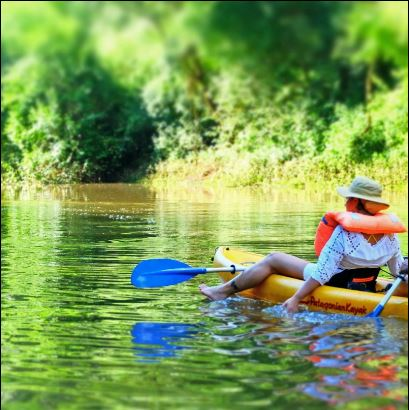

Chacra del Agua es un Reserva Privada de biodiversidad que se encuentra en el Noreste de Argentina en la Provincia de Misiones. Comprometidos con el medio y la eco-sosteniblilidad se funda en una propuesta que orbita en el aprovechamiento de las bondades de la naturaleza, la fauna, la flora, el clima, combinado con servicios al viajero para re-conectar y propiciar una comunicacion real y fluida consigomismo.
Chacra del Agua se sitúa en Colonia Puerto Paraíso, dependiente del municipio de El Soberbio, departamento Guaraní.
Nos encontramos a 30 km de los Saltos del Moconá y en las puertas de la Reserva Yabotí, protegida por la UNESCO por su biodiversidad dentro del programa "Man and biosphere".
Destacado por poseer un clima sub-tropical, en la selva hay 4 estaciones.
El invierno dura poco, pero cuando aparece puede llegar a helar. A veces llueven días seguidos y no sale el sol, por lo que la humedad se hace sentir.
Todo el año hay una importante diferencia térmica entre el día y la noche.
En verano las noches son frescas y permiten descansar del sol que brilla durante el día sin necesidad de aire acondicionado.
En invierno anochece hacia las 16:30 hs (en el solsticio de invierno) y en verano hacia las 19:30 hs (en el solsticio de verano).
Las tormentas repenitnas de corta y larga duración, son indispensables para mantener la humedad en la selva.
En Chacra del Agua ofrecemos actividades recreativas, donde podrás reconectarte con la naturaleza, disfrutar de trakkings a través de la exhuberante selva misionera, de paseos en kayak en los brazos del Rio Uruguay. La fauna es muy nutrida, tucanes, ocelotes, yaguaretés, monos, aguiluchos, se destacan entre las especies que merodean estas tierras
Nos encontramos a pocos kilómetros del Parque Provincial Moconá, donde podrá disfrutar en el corazón del parque los Saltos del Moconá que conforman un espectáculo único en el mundo, producto de una falla geológica sobre el río Uruguay, entre las desembocaduras de los arroyos Pepirí Guazú y Yabotí .